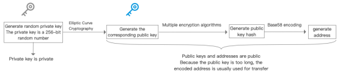

What is a wallet?
Wallets are used to store addresses and private keys. How did the wallet address and private key come from? When creating a wallet, a pair of public and private keys is generated. Based on the principle of elliptic encryption, the private key can calculate the public key, and then the wallet address can be obtained from the public key through the operation of digital signature and hash algorithm. It can be said that the address is another representation of the wallet public key. . In reality, what people mean by wallet usually refers to wallet software.

Cold and Hot Wallets
If you have a blockchain foundation, you should understand that wallets are also hot and cold.
A cold wallet means that the private key of the wallet has never been exposed on an internet-connected device, while a hot wallet is the opposite. The wallet software generally belongs to a hot wallet, because transactions cannot be performed without an internet connection.